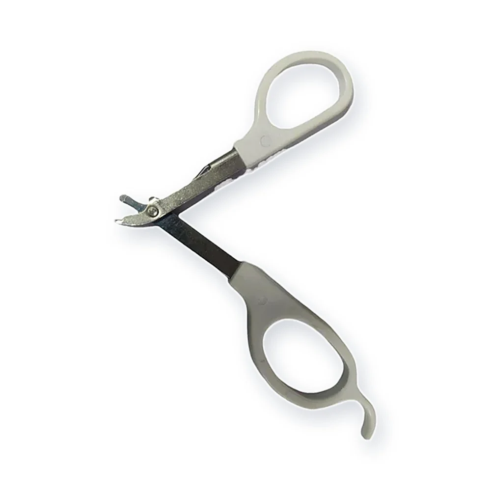
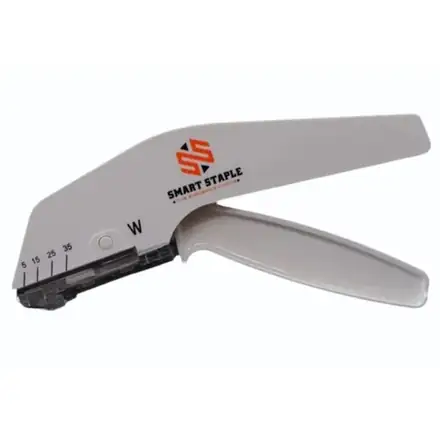

SMART REMOVER™ Skin Staple Remover
For quick, comfortable removal of surgical skin staples after healing. Made in India by Desbro Biosciences.


About this product
The Desbro Skin Staple Remover is used by clinicians to remove surgical skin staples once the wound has healed.
It is manufactured in our licensed facility in Hyderabad and supplied to hospitals, clinics and distributors across India and in the African market.
- Simple scissor-style grip
- For removing standard surgical skin staples
- Pairs with the Desbro SMART STAPLER™ Skin Stapler
- Works with skin staples of other brands
Specifications
| Manufacturer | Desbro Biosciences Pvt. Ltd., Hyderabad, India |
|---|---|
| Regulatory | Class A medical device · Form MD-5 licence No. MFG/MD/2025/000200, Endorsement No. 1 (Drugs Control Administration, Telangana) |
| Brand | SMART REMOVER™ |
| Intended use | Removal of surgical skin staples after healing |
| Type | Scissor-style, plastic handle |
| Material | Stainless steel jaws, PVC handle |
| Length | 4.2 in |
| Shelf life | 3 years |
| Packing | Individual pack, 20 per inner box, 200 per carton |
Download spec sheetPDF, 1 page
For full specifications, pack sizes and pricing, contact us.
Frequently asked questions
Who is this staple remover for?
Hospitals, clinics, nursing staff and surgeons, and the distributors who supply them.
Is this product made in India?
Yes. It is manufactured by Desbro Biosciences in our own facility in Hyderabad, under a Form MD-5 medical device manufacturing licence issued by the Drugs Control Administration, Telangana.
Can I order in bulk or become a distributor?
Yes. We supply hospitals and clinics directly and work with 100+ distributors across 12+ states. Contact us for bulk pricing or to become a distributor.
Do you export?
Yes. We export to the African market, currently to Kenya. Contact us with your country and requirements.
What is the HS code for export?
9018 90 29.
Is it supplied sterile?
No, it is supplied non-sterile. Sterilisation can be arranged on request.
How is it packed?
An individual pack, 20 removers per inner box and 200 per regular carton. Master cartons are packed to your order.
Can we sell it under our own brand?
Yes. We manufacture under private label: your brand name and logo on the device and your artwork on the pouch, box and carton. The device is made on the same line, under the same Form MD-5 licence and ISO 13485:2016 quality system.
Also from Desbro

View product →
Enquire about the SMART REMOVER™ Skin Staple Remover
Hospitals, clinics, distributors and export partners: call, WhatsApp or email us.